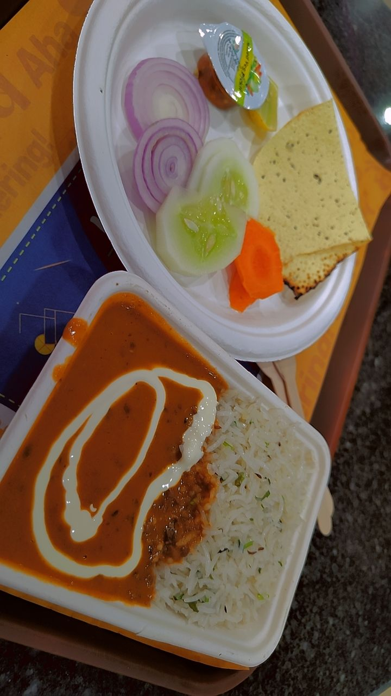

The meaning of her name - cheerful, patient, and reliable truely justifies her. It was 27th May, 2023 Saturday evening 07:32PM, Farewell Day at MIT ADT University, Loni Kalbhor. That day I got ready for the event in the evening. Me & my friends gave the final presentation for our Major Project Panel. We were nervous and excited at the same time. The day we(me and prajwal wakhare) got good news, that our patent had been filed successfully. It was a huge sigh of relief for both of us, after months of hard work. Later that evening, there was this farewell programme for our passout batch. I was pretty much nervous, since I nominated for the Best Outgoing Student of the year 2019 batch. But things went for a toll and unfortunately, I was not able to bag the award. It was at that moment, my mind started to began filling with all the misery and agony. I could not take it anymore and walked out of the event straight in front of the whole class and had tears in my eyes. Before that night, I have called my junior Vanshika from ECE, to know who is getting awarded the prize. She was unaware till the evening, since it was not disclosed till the end moment. Coming back to the scene, the farewell came to an end and I was standing outside of the lab gazing the mechanical student's farewell from the windows at the 5th floor. Then rajnish, prajwal, Vanshika, Medha, Sneha came to see me and check out what happened to me. That's when I first met her. She asked me if I was okay and told to join for the dinner at Sangeet kala mess. I kept denying that I will eat later. But she was persistent enough to take me there. As we reached the ground floor, Shubhangi ma'am offered us a lift in her car to the mess. I was very angry, depressed and frustrated to answer anybody's questions. We reached the mess and had our meals.
After that Vanshika met ma'am and got furious for not awarding me the prize. Then she asked me if I a want to talk about it in detail, to lighten my heart.
I was not in a mood to talk to anybody, but I thought to have a talk with her. Rajnish went to his room, I told, I will join back later in sometime.
Then me and Vanshika went to the tuck shop, sneha and medha left from there later.
We both sat there and talked.
Later that night, when I reached room, Vanshika asked me if I was okay. To which my heart didn't know the correct answer.
She felt that and asked that if we can go out tomorrow somewhere,where you can share your emotions. I felt good, because no one asked or cared about my feelings.
The next day we went to the Avenue mall nearby. So there she ordered momos & I had paneer biriyani.
From there, we went to The seasons mall in the evening and had a frappuccino and hibiscus iced tea at the Starbucks.

Its our very first selfie together. Vanshu in her black top & her blue jeans. We both talked for hours over there, then roamed for a while in the mall. I held her hands, it just feels so comforting and safe when I am around her. I could sense that trustworthiness and genuinity in her eyes. I told her everything about my past life, my fears, my strenghts, my insecurities and my failures and my achievements. It felt light and good after sharing with her.

Then for the dinner, we went to Haldirams and we had Dal makhani rice bowl and later she had oreo waffle from other stall in the mall.
I legit had tears of joy in my eyes, because for the first time, I felt cared by someone. Vanshika fed me the entire rice bowl with her own hands to me.
It felt very motherly and dear to me. I never experienced that before.
On the inside we both were so enjoying each others' company. I wanted that moment to last long, but alas we already reached the time and had to go to college.
I dropped her at the college and I went back to room. Again that night my mind full of her, thinking about her.
Us din se mere dil mai ek jagah ban gayi uske liye.
We had a lot of memories that day.
Our friendship eventually grew stronger and merrier. We began sharing personal things. Our fears, strengths, and a lot more. I enjoy every moment I spent by her side. Vanshika is a girl with a pure heart and soul. I respect her a lot.
Vanshika became Vanshu in the meantime.
For more things and to know what happened next, Please navigate to the next Blog.
With Love ♥️
Yours Vicky